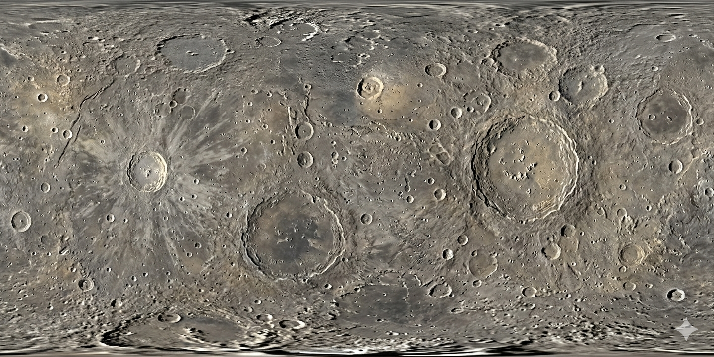
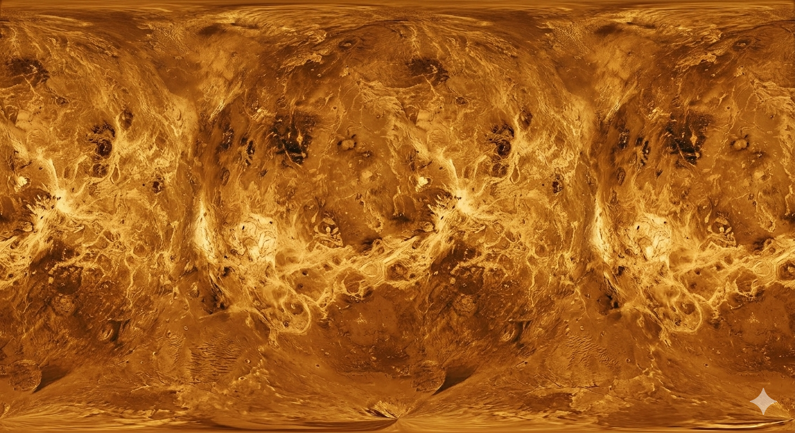
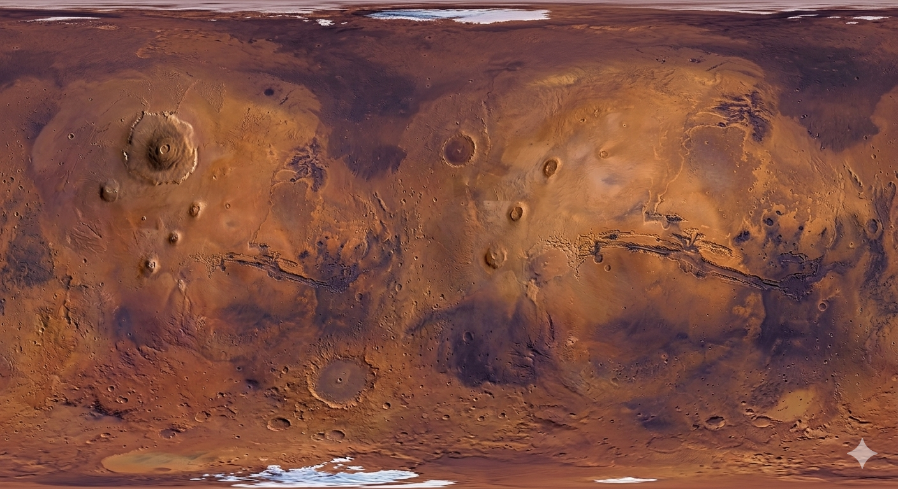
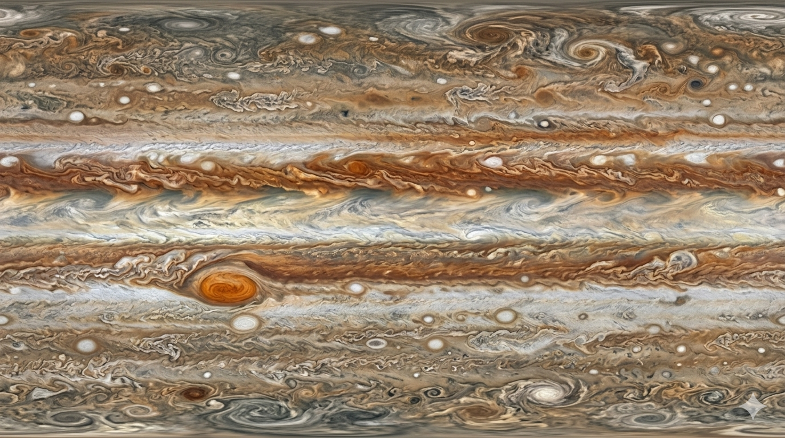
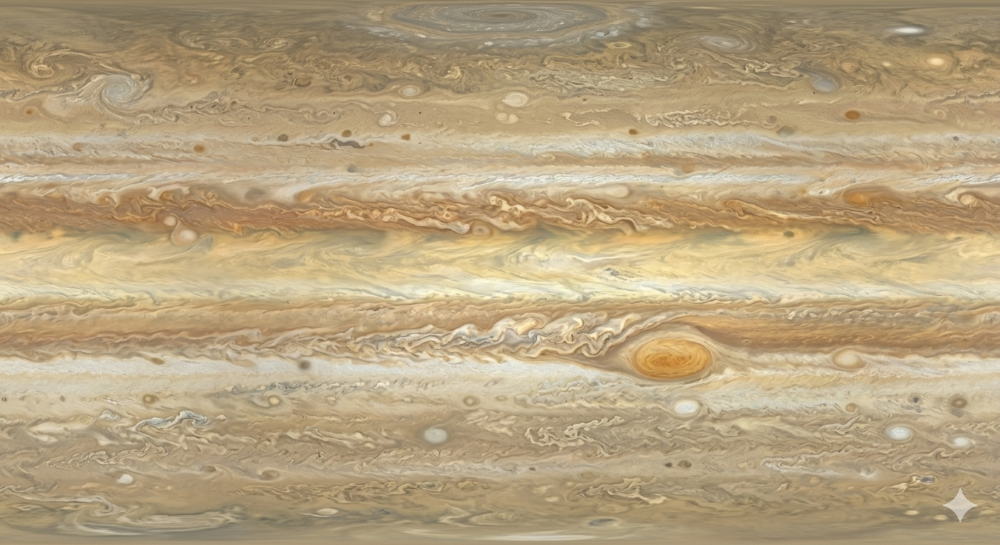
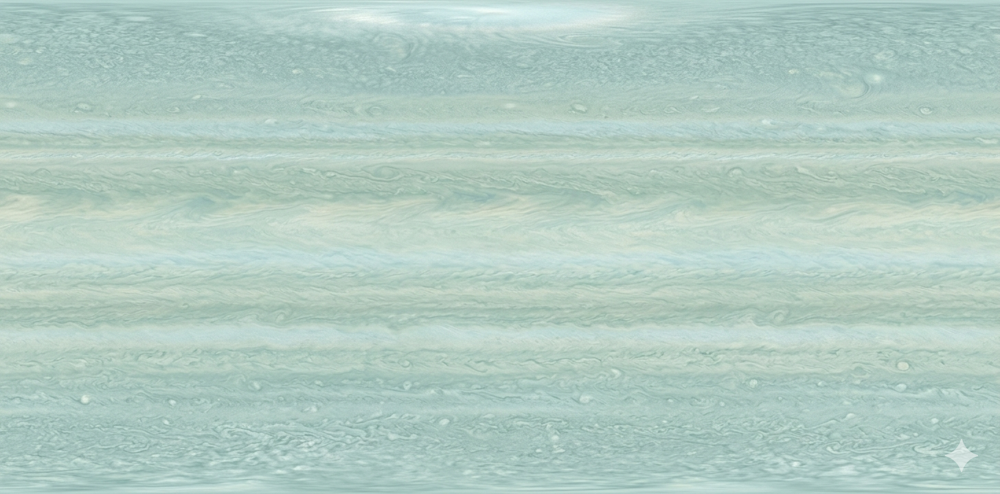
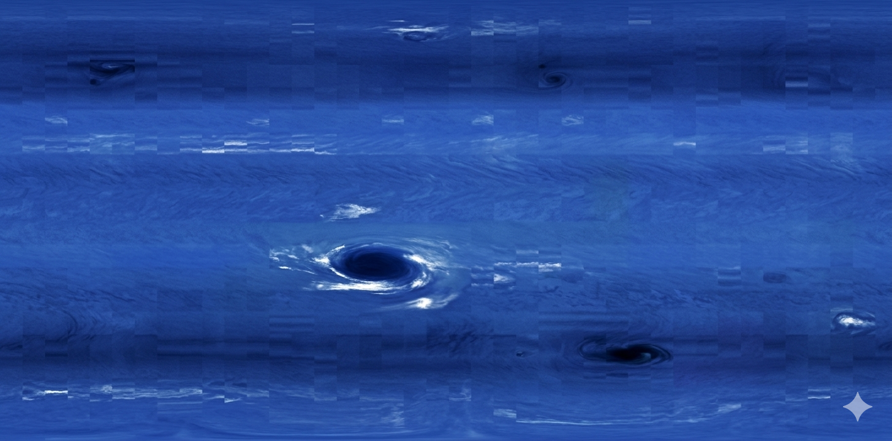
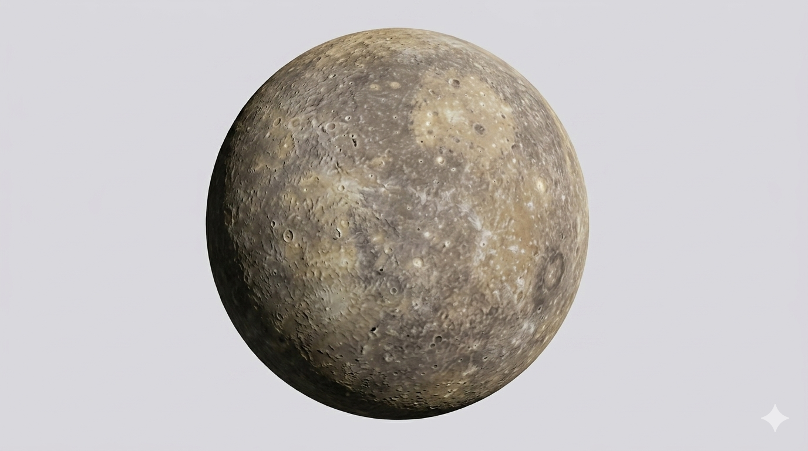
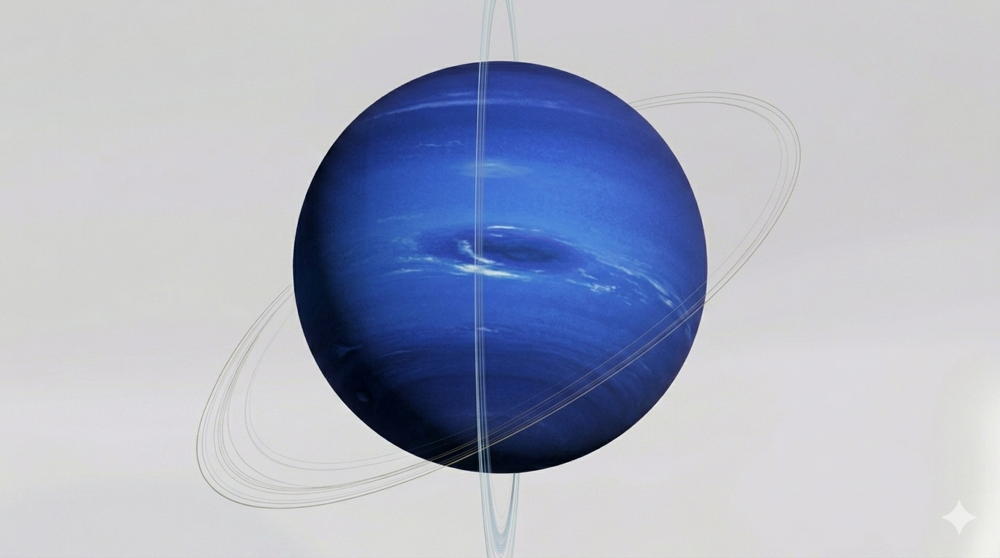

This is the eleventh original article on aogl.cn, sourced from original/major-planets8/. The folder is a solar-system texture atlas for WebGL and outreach pages: equirectangular maps for eight worlds (Earth plus Mercury through Neptune), a multi-channel Earth stack, a starfield background, six Gemini-style hero spheres, and Interactive-3D-Earth-video.mp4 showing how the Earth channels behave in the browser. It is not a NASA data portal and not a stock asset store—only filenames, roles, and how this pack relates to other demos on the site.
What is in the folder
- Planet equirectangular maps —
Mercury.png,Venus.png,Mars.png,jupiter.png,saturn.png,uranus.png,neptune.png - Earth channels —
earth-blue-marble.jpg,earth-topology.png(bump),earth-water.png(specular/ocean),earth-night.jpg(city lights),earth-dark.jpg(night-side helper) - Environment —
night-sky.pngstarfield - Hero renders — six
Gemini_Generated_Image_*.pngfull-sphere illustrations - Screen recording —
Interactive-3D-Earth-video.mp4
Headings use honest phrases such as solar system textures, planet equirectangular map, Three.js sphere texture, and blue marble earth—each tied to files on disk, not invisible keyword spam.
Why 2:1 equirectangular maps
Wrapped on SphereGeometry in Three.js, a 2:1 equirectangular image covers the globe with predictable pole stretching. Gas giants need clean seams at 0°/360° longitude so banding does not flicker when users drag orbit controls. Rocky bodies need crater ray systems that do not “break” at the seam. I always zoom the seam column before publishing.
The site’s interactive 3D Earth already uses this pattern for an exterior-view Earth with clouds and atmosphere. major-planets8 supplies the other seven planets so you can build a classroom solar-system row, a museum kiosk, or a portfolio strip without hunting new textures each time.
Terrestrial maps: Mercury, Venus, Mars
Mercury.png is a grey, cratered globe with bright ray systems from young impacts—useful copy hooks for MESSENGER-era global mapping. Venus.png shows radar topography in gold and brown: bright tessera highlands and darker volcanic plains. Remind readers the surface is hidden by sulfuric acid clouds; the map is radar shape, not a visible-light photo. Mars.png delivers rust tones, Valles Marineris, and polar caps—pair it with Gemini_Generated_Image_6wdi276wdi276wdi.png when you want a poster-style Mars beside a science map.



Gas and ice giants: Jupiter through Neptune
jupiter.png includes the Great Red Spot and alternating belts and zones—align lighting in your scene so the storm sits in a believable latitude. saturn.png covers the cloud bands; rings belong on separate geometry or alpha cards, not inside the 2:1 strip. The Gemini Saturn render (Gemini_Generated_Image_79swyt79swyt79sw.png) is the article hero because rings read instantly in thumbnails.
uranus.png is smooth cyan-green—pair with copy about its extreme axial tilt. neptune.png shows deep blue banding and dark spots for ice-giant wind stories. Gallery below is ready for hotlinking in your own demos.




Earth: five files, one planet
Earth is the only world shipped with multiple channels:
earth-blue-marble.jpg— daytime albedo, the default “classroom globe” lookearth-topology.png— bump driver for reliefearth-water.png— specular mask for oceansearth-night.jpg— city lights for dusk terminatorsearth-dark.jpg— helper to keep nightside cities from leaking onto day
For a live Earth, start with the iframe in interactive 3D Earth; use major-planets8 when you need source paths to fork, compress, or mirror on a CDN.

earth-blue-marble.jpg — daytime Earth, 2:1 global texture.Starfield: night-sky.png
Use night-sky.png as Scene.background or a skydome so planets sit in space instead of flat grey WebGL clears. It does not need to match planet resolution, but keep it slightly dark and cool so Jupiter or Saturn does not lose contrast.
Gemini hero spheres for cards and OG images
The six Gemini_Generated_Image_*.png files are full-disk illustrations on neutral grey—not equirectangular strips. Use them for carousel art, social cards, and hero images; use the PNG/JPG maps when you need a spinnable globe. Three examples below; the rest remain in the folder for your own comparisons.



Screen recording: Interactive-3D-Earth-video.mp4
The MP4 documents Earth interaction—drag, zoom, atmospheric rim—not a tour of every planet texture. It still anchors why the Earth files exist and how they differ from a single-map gas giant.
Interactive-3D-Earth-video.mp4 — Earth Three.js demo capture (~24 MB).Publishing, accessibility, and search
Video embeds use controls, playsinline, and preload="metadata". Still maps include descriptive alt text with planet names and filenames. JSON metadata drives titles and descriptions; body copy repeats topics in visible h2 headings. Submit the article URL in Search Console—textures stay assets, not separate landing pages.
How this differs from other space demos here
Velmora is a solar-system explorer concept with its own art direction. Interactive 3D Earth is Earth-only. In-car train window scenery and apartment 360° are interior framing studies. major-planets8 is the downloadable map pack + Earth channels + hero art lane on the home carousel.
What I did not ship
No Pluto maps, no orbital mechanics simulator, no claim of live telescope feeds. Educational products need their own fact-checking and licensing review; Gemini heroes are not mission-grade charts.
Reuse checklist
- One
SphereGeometryper planet with equirectangularmap; Earth adds bump, specular, and night blend. - Model Saturnian, Uranian, and Neptunian rings separately from the 2:1 body texture.
- Back scenes with
night-sky.pngand publish an 800+ word note like this one so crawlers see context around the binaries.
Keep original/major-planets8/ beside article HTML with relative paths so GitHub Pages and local WAMP stay in sync.